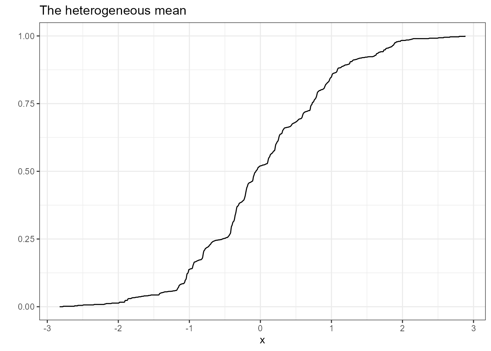
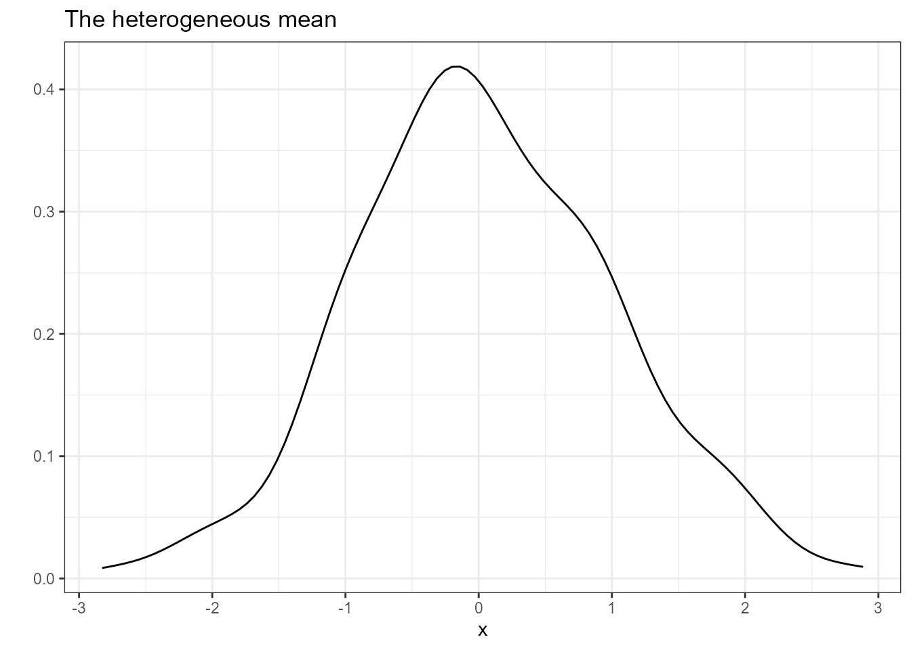

Getting Started with the panelhetero Package
Ryo Okui (okuiryo@e.u-tokyo.ac.jp), Takahide Yanagi (yanagi@econ.kyoto-u.ac.jp), Heejun Lee (info.hlee@gmail.com)
panelhetero.RmdThis vignette discusses how to use the panelhetero package in R.
The package enables to estimate the degree of heterogeneity across cross-sectional units in panel data. The methods are developed by:
- Okui and Yanagi (2019) “Panel data analysis with heterogeneous dynamics”
- Okui and Yanagi (2020) “Kernel estimation for panel data with heterogeneous dynamics”
Setup
We have balanced panel data \(\{ y_{it} \}\) for \(i = 1, \dots, N\) and \(t = 1, \dots, T\), where
- \(y_{it}\): A scalar random variable for unit \(i\) in period \(t\).
- \(N\): The number of cross-sectional units.
- \(T\): The length of time series.
Assume that the individual time series \(\{ y_{it} \}\) for \(t = 1, \dots, T\) is strictly stationary across time but heterogeneous across units.
To examine the degree of heterogeneity, we focus on estimating the cumulative distribution function (CDF), density function, and moments (i.e., the means, variances, and correlations) of the heterogeneous mean \(\mu_i\), \(k\)-th autocovariance \(\gamma_{k,i}\), and \(k\)-th autocorrelation \(\rho_{k,i}\):
- \(\mu_i = E(y_{it} \mid i)\),
- \(\gamma_{k,i} = E[(y_{it} - \mu_i)(y_{i,t-k} - \mu_i) \mid i]\),
- \(\rho_{k,i} = \gamma_{k,i} / \gamma_{0,i}\),
where \(E(\cdot \mid i)\) denotes the population mean for the individual time series. In words, \(\mu_i\), \(\gamma_{k,i}\), and \(\rho_{k,i}\) are the population mean, \(k\)-th autocovariance, and \(k\)-th autocorrelation, respectively, for the individual time series. Note that \(\gamma_{0, i}\) corresponds to the heterogeneous variance. These variables are treated as i.i.d. random variables across units.
The estimators are the corresponding sample analogues:
- \(\hat \mu_i = \frac{1}{T} \sum_{t=1}^T y_{it}\).
- \(\hat \gamma_{k,i} = \frac{1}{T-k} \sum_{t=k+1}^T (y_{it} - \hat \mu_i)(y_{i,t-k} - \hat \mu_i)\).
- \(\hat \rho_{k,i} = \hat \gamma_{k,i} / \hat \gamma_{0,i}\).
Denoting \(\xi_i = \mu_i\), \(\gamma_{k,i}\), or \(\rho_{k,i}\), the parameters of interest are:
- The CDF \(F_{\xi}(\cdot) = \Pr(\xi_i \le \cdot)\).
- The density function \(f_{\xi}(\cdot)\).
- The mean \(E(\xi_i)\).
- The variance \(var(\xi_i)\).
- The correlations, such as \(cor(\mu_i, \gamma_{k,i})\).
Okui and Yanagi (2019) propose the empirical distribution estimation of the CDF and the moments of the true \(\mu_i\), \(\gamma_{k,i}\), and \(\rho_{k,i}\) using the estimated \(\hat \mu_i\), \(\hat \gamma_{k,i}\), and \(\hat \rho_{k,i}\). Okui and Yanagi (2020) propose the nonparametric kernel smoothing estimation for the density of the true \(\mu_i\), \(\gamma_{k,i}\), and \(\rho_{k,i}\) using the estimated \(\hat \mu_i\), \(\hat \gamma_{k,i}\), and \(\hat \rho_{k,i}\). Since these estimators have asymptotic biases, they propose the half-panel jaccknife (HPJ) bias correction and the third-order jackknife (TOJ) bias correction. In addition, they also consider the cross-sectional bootstrap procedures for performing statistical inference.
The HPJ and TOJ bias correction requires \(T \ge 4\) and \(T \ge 6\), respectively.
Functions
The panelhetero package provides the following functions:
-
nemoment(): The naive estimation of the moments of the heterogeneous mean, the heterogeneous autocovariance, and the heterogeneous autocorrelation without bias correction -
hpjmoment(): The HPJ bias-corrected estimation of the moments of the heterogeneous mean, the heterogeneous autocovariance, and the heterogeneous autocorrelation -
tojmoment(): The TOJ bias-corrected estimation of the moments of the heterogeneous mean, the heterogeneous autocovariance, and the heterogeneous autocorrelation -
neecdf(): The naive empirical CDF estimation without bias correction -
hpjecdf(): The HPJ bias-corrected empirical CDF estimation -
tojecdf(): The TOJ bias-corrected empirical CDF estimation -
nekd(): The naive kernel density estimation without bias correction -
hpjkd(): The HPJ bias-corrected kernel density estimation -
tojkd(): The TOJ bias-corrected kernel density estimation
Below we discuss the arguments and the returned values of each function.
nemoment()
The nemoment() function enables to implement the naive
estimation of the moments of the heterogeneous quantities without bias
correction. The parameters of interest are the means, variances, and
correlations:
- \(E(\mu_i)\)
- \(E(\gamma_{k,i})\)
- \(E(\rho_{k,i})\)
- \(var(\mu_i)\)
- \(var(\gamma_{k,i})\)
- \(var(\rho_{k,i})\)
- \(cor(\mu_i, \gamma_{k,i})\)
- \(cor(\mu_i, \rho_{k,i})\)
- \(cor(\gamma_{k,i}, \rho_{k,i})\)
The usage is
nemoment(data, acov_order = 0, acor_order = 1, R = 1000)
with:
-
data: An \(N \times T\) matrix of panel data. Each row corresponds to individual time series. -
acov_order: A non-negative integer \(k\) of the order of autocovariance. Default is 0. -
acor_order: A positive integer \(k\) of the order of autocorrelation. Default is 1. -
R: A positive integer of the number of bootstrap repetitions. Default is 1000.
The function returns a list that contains the following elements:
-
estimate: A vector of the parameter estimates -
se: A vector of the standard errors computed by the cross-sectional bootstrap -
ci: A matrix of the 95% confidence intervals computed by the cross-sectional bootstrap -
quantity: A matrix of the estimated heterogeneous quantities -
acov_order: The order of autocovariance -
acor_order: The order of autocorrelation -
N: The number of cross-sectional units -
S: The length of time series -
R: The number of bootstrap repetitions
Note: The bootstrap results depend on random number generation. It is
highly recommended to use set.seed() before
nemoment(). The same comment also applies to the other
functions.
hpjmoment()
The hpjmoment() function enables to implement the HPJ
bias-corrected estimation of the moments of the heterogeneous quantities
The parameters of interest are the same as nemoment(). The
usage is
hpjmoment(data, acov_order = 0, acor_order = 1, R = 1000)
with the same arguments as nemoment(). The function returns
a list that contains the same elements as nemoment().
tojmoment()
The tpjmoment() function enables to implement the TOJ
bias-corrected estimation of the moments of the heterogeneous quantities
The parameters of interest are the same as nemoment(). The
usage is
tojmoment(data, acov_order = 0, acor_order = 1, R = 1000)
with the same arguments as nemoment(). The function returns
a list that contains the same elements as nemoment().
neecdf()
The neecdf() function enables to implement the naive
empirical CDF estimation without bias correction. The parameters of
interest are the CDFs of \(\mu_i\),
\(\gamma_{k,i}\), and \(\rho_{k,i}\).
The usage is
neecdf(data, acov_order = 0, acor_order = 1, R = 1000, ci = TRUE)
with:
-
data: An \(N \times T\) matrix of panel data. Each row corresponds to individual time series. -
acov_order: A non-negative integer \(k\) of the order of autocovariance. Default is 0. -
acor_order: A positive integer \(k\) of the order of autocorrelation. Default is 1. -
R: A positive integer of the number of bootstrap repetitions. Default is 1000. -
ci: A logical whether to compute the 95% confidence interval for the CDF. Default is TRUE.
The function returns a list that contains the following elements:
-
mean: A plot of the estimated distribution of the heterogeneous mean made byggplot2::stat_function() -
acov: A plot of the estimated distribution of the heterogeneous autocovariance made byggplot2::stat_function() -
acor: A plot of the estimated distribution of the heterogeneous autocorrelation made byggplot2::stat_function() -
mean_func(): A function that returns the value of the estimated distribution of the heterogeneous mean -
acov_func(): A function that returns the value of the estimated distribution of the heterogeneous autocovariance -
acor_func(): A function that returns the value of the estimated distribution of the heterogeneous autocorrelation -
mean_ci_func(): A function that returns the 95% confidence interval for the estimated distribution of the heterogeneous mean -
acov_ci_func(): A function that returns the 95% confidence interval for the estimated distribution of the heterogeneous autocovariance -
acor_ci_func(): A function that returns the 95% confidence interval for the estimated distribution of the heterogeneous autocorrelation -
quantity: A matrix of the estimated means, autocovariances, and autocorrelations -
acov_order: The order of autocovariance -
acor_order: The order of autocorrelation -
N: The number of cross-sectional units -
S: The length of time series -
R: The number of bootstrap repetitions
Note: In each plot, x-axis limits are set to the minimum and maximum of the estimated quantity.
hpjecdf()
The hpjecdf() function enables to implement the HPJ
bias-corrected empirical CDF estimation. The parameters of interest are
the same as neecdf(). The usage is
hpjecdf(data, acov_order = 0, acor_order = 1, R = 1000, ci = TRUE)
with the same arguments as neecdf(). The function returns a
list that contains the same elements as neecdf().
Note 1: Due to bias correction, the HPJ bias-corrected empirical distribution estimator may be a non-monotonic function. To address this issue, the HPJ bias-corrected estimator is converted into a monotonic function using the Rearrangement package.
Note 2: The mean_func(), acov_func(), and
acor_func() functions returned by hpjecdf()
are not subject to rearrangement. If desired, you can manually use the
Rearrangement package to get a rearrangement
estimate.
Note 3: Due to bias correction, the HPJ or TOJ bias-corrected empirical distribution estimate may be less than 0 or greater than 1. We adjust the estimate to be between 0 and 1.
tojecdf()
The hpjecdf() function enables to implement the HPJ
bias-corrected empirical CDF estimation. The parameters of interest are
the same as neecdf(). The usage is
hpjecdf(data, acov_order = 0, acor_order = 1, R = 1000, ci = TRUE)
with the same arguments as neecdf(). The function returns a
list that contains the same elements as neecdf().
Note: The same comments about hpjecdf() also apply to
tojecdf().
nekd()
The nekd() function enables to implement the naive
kernel density estimation without bias correction using the Gaussian
kernel. The parameters of the interest are the density function of \(\mu_i\), that of \(\gamma_{k,i}\), and that of \(\rho_{k,i}\).
The usage is
nekd(data, acov_order = 0, acor_order = 1, mean_bw = NULL, acov_bw = NULL, acor_bw = NULL)
with:
-
data: An \(N \times T\) matrix of panel data. Each row corresponds to individual time series. -
acov_order: A non-negative integer \(k\) of the order of autocovariance. Default is 0. -
acor_order: A positive integer \(k\) of the order of autocorrelation. Default is 1. -
mean_bw: The bandwidth used for estimating the density function of the heterogeneous mean. Default is NULL, and the plug-in bandwidth is obtained fromKernSmooth::dpik(). -
acov_bw: The bandwidth used for estimating the density function of the heterogeneous autocovariance. Default is NULL, and the plug-in bandwidth is obtained fromKernSmooth::dpik(). -
acor_bw: The bandwidth used for estimating the density function of the heterogeneous autocorrelation. Default is NULL, and the plug-in bandwidth is obtained fromKernSmooth::dpik().
The function returns a list that contains the following elements:
-
mean: A plot of the estimated density of the heterogeneous mean made byggplot2::stat_function() -
acov: A plot of the estimated density of the heterogeneous autocovariance made byggplot2::stat_function() -
acor: A plot of the estimated density of the heterogeneous autocorrelation made byggplot2::stat_function() -
mean_func(): A function that returns the value of the estimated density of the heterogeneous mean -
acov_func(): A function that returns the value of the estimated density of the heterogeneous autocovariance -
acor_func(): A function that returns the value of the estimated density of the heterogeneous autocorrelation -
bandwidth: A vector of the bandwidths -
quantity: A matrix of the estimated means, autocovariances, and autocorrelations -
acov_order: The order of autocovariance -
acor_order: The order of autocorrelation -
N: The number of cross-sectional units -
S: The length of time series
Note: In each plot, x-axis limits are set to the minimum and maximum of the estimated quantity.
hpjkd()
The hpjkd() function enables to implement the HPJ
bias-corrected kernel density estimation. The parameters of interest are
the same as nekd(). The usage is
hpjkd(data, acov_order = 0, acor_order = 1, mean_bw = NULL, acov_bw = NULL, acor_bw = NULL)
with the same arguments as nekd(). The function returns a
list that contains the same elements as nekd().
Note: Due to bias correction, the HPJ bias-corrected density estimate may be less than 0. The estimate is adjusted so that it is not less than 0.
tojkd()
The tojkd() function enables to implement the TOJ
bias-corrected kernel density estimation. The parameters of interest are
the same as nekd(). The usage is
tojkd(data, acov_order = 0, acor_order = 1, mean_bw = NULL, acov_bw = NULL, acor_bw = NULL)
with the same arguments as nekd(). The function returns a
list that contains the same elements as nekd().
Note: The same comment about hpjkd() also applies to
tojkd().
Examples
The following simple example illustrates the use of the panelhetero package.
To begin with, install the package with:
install.packages("panelhetero")
library(panelhetero)Or
# install.packages("devtools") # if necessary
# install.packages("ggplot2") # if necessary
devtools::install_github("tkhdyanagi/panelhetero", build_vignettes = TRUE)
library(panelhetero)Then, using the simulation() function, generate
artificial data from an AR(1) model with random coefficients as
follows.
set.seed(1)
y <- panelhetero::simulation(N = 300, S = 8)The nemoment(), hpjmoment(),
tojmoment() functions enable to estimate the moments of the
heterogeneous quantities. For example, you can implement the HPJ
bias-corrected estimation as follows.
result1 <- hpjmoment(data = y, acov_order = 0, acor_order = 1)
result1$estimate
#> E(mean) E(acov) E(acor) var(mean) var(acov)
#> 0.045292150 0.389074482 0.359539625 0.900338806 0.073253948
#> var(acor) cor(mean, acov) cor(mean, acor) cor(acov, acor)
#> 0.072506331 -0.004269697 -0.004974914 0.004231555
result1$se
#> E(mean) E(acov) E(acor) var(mean) var(acov)
#> 0.05726649 0.02105856 0.03394039 0.08499369 0.01637006
#> var(acor) cor(mean, acov) cor(mean, acor) cor(acov, acor)
#> 0.01602074 0.09375047 0.11572946 0.08964072
result1$ci
#> 95% CI lower 95% CI upper
#> E(mean) -0.06258859 0.1569463
#> E(acov) 0.34940286 0.4290926
#> E(acor) 0.29244305 0.4238191
#> var(mean) 0.74091639 1.0741703
#> var(acov) 0.04360967 0.1067161
#> var(acor) 0.04252445 0.1048688
#> cor(mean, acov) -0.18701211 0.1735921
#> cor(mean, acor) -0.22024162 0.2249527
#> cor(acov, acor) -0.17275447 0.1712729The neecdf(), hpjecdf(),
tojecdf() functions enable to implement the empirical CDF
estimation. For example, you can implement the HPJ bias-corrected
empirical CDF estimation with:
result2 <- hpjecdf(data = y,
acov_order = 0,
acor_order = 1,
R = 100,
ci = FALSE)
result2$mean
The nekd(), hpjkd(), tojkd()
functions enable to implement the kernel density estimation. For
example, you can implement the HPJ bias-corrected kernel density
estimation with:
result3 <- hpjkd(data = y, acov_order = 0, acor_order = 1)
result3$mean
Each function makes this type of figure using the ggplot2 package. You can customize it via standard commands for the ggplot2 package. For example, we can customize the title and the theme as follows.
result3$mean +
ggtitle("") +
theme_classic()The neecdf(), hpjecdf(),
tojecdf(), nekd(), hpjkd(), and
tojkd() functions return the mean_func(),
acov_func(), and acor_func() functions that
return the estimated CDFs and the estimated density functions. Using
these functions, you can make figures by yourself. For example, you can
make a figure of the HPJ bias-corrected density for the heterogeneous
mean as follows.
ggplot(data = data.frame(x = c(-3.5, 3.5)), aes(x = x)) +
stat_function(fun = result3$mean_func) +
ggtitle("")References
Ryo Okui, Takahide Yanagi (2019): “Panel data analysis with heterogeneous dynamics”, Journal of Econometrics, 212(2), 451-475.
Ryo Okui, Takahide Yanagi (2020): “Kernel estimation for panel data with heterogeneous dynamics”, The Econometrics Journal, 23(1), 156-175.